The Wyze Cam is a very clever and small camera that connects to your WIFI and can be viewed from your mobile.
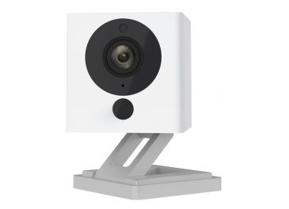
Wyze Sense
The Wyze Sense works with the Wyze Cam just like a door sensor, registering when the door is open or close.
You can configure the Wyze Sense to alert you via a push notification to your phone when:
- The door is being opened;
- The door is being closed;
- The door has been open for X minutes; and
- The door has been closed for X minutes.
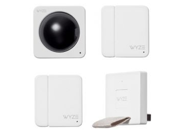
Wyze Sense garage door
The Wyze Sense has 2 pieces that need to connect in order to register a close connection.
In some cases, like my garage door, it wasn't possible to position the sensors in such a
way to make connection when the garage door was closed.
I ended up putting the Wyze Sense on a hinch that falls away when the door opens and
connects when the door closes.
Wyze Sense gate
Unfortunately, the Wyze Sense is not waterproof. It was designed to be for indoor applications.
By chance, a 29" bicycle tube is exactly the same size as the Wyze Sense.
I ended up wrapping the sense in the tube and it still works fine even in the rain.
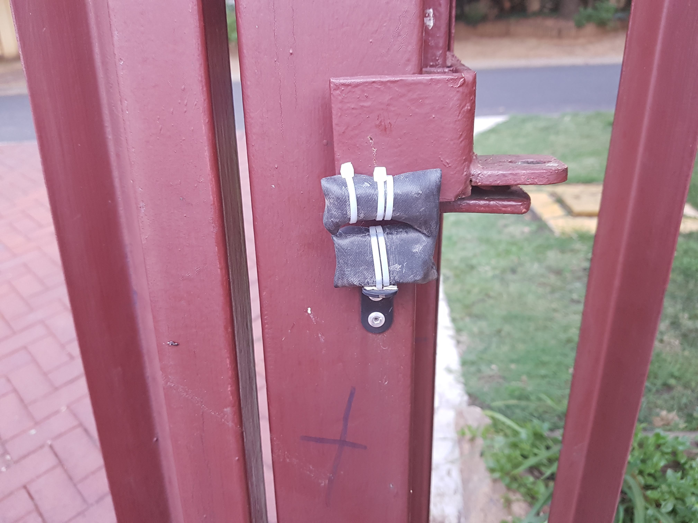
Sonoff Switch
The Sonoff switch works like a normal switch you have to power an appliance, but instead of manully switching it yourself
you use a mobile app to switch appliances on and off.
The application has many functions e.g. a scheduler to switch appliances on and off at
certain times or, with the Sonoff inching feature you can automatically switch the appliance off
after some time.
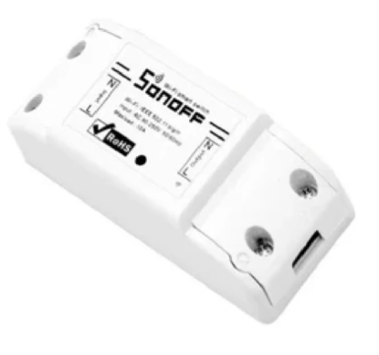
Opening Garage and Gates
Without wiring to any motor:
Both of these systems are controlled by a cheap Sonoff Switch.
To integrate with existing systems like a garage door motor or gate motor, you need to know
what wires to connect to what parts.
This to me was always risky. I didn't want to end up replacing a very expensive motor because
of a hobby I was trying out.
I therefor thought that if I could integrate with the remote that is already programmed to open
the door, the worse that could happen, was the replacement of a remote and not an expensive
motor.
So I opened up my remote and had a look at the button you press to open the gate.
Most buttons will look something like this:
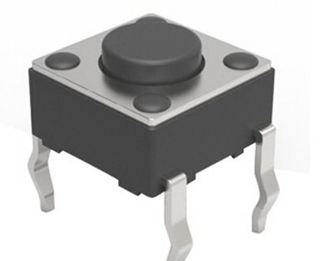 To explain how the buttons work consider this picture:
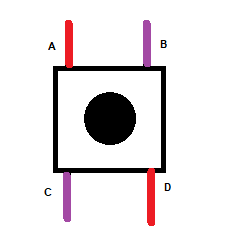
If you press down on the button, it will connect the 2 red legs and the 2 purple legs.
So all we need to do is to connect either the red or the purple legs manually, without pressing
the button. This is where we are using the Sonoff switch.
But the sonoff switch by default has a power output. We don't want a power output to go
to the remote. We only want to open or close the connection to the red or purple lines.
There is only one extra component required in order to do that. It is called a Relay switch that you
can pick up at any electrical shop.
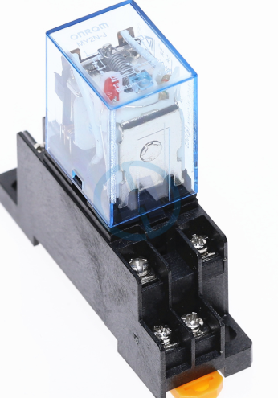 How a relay works, consider this drawing:
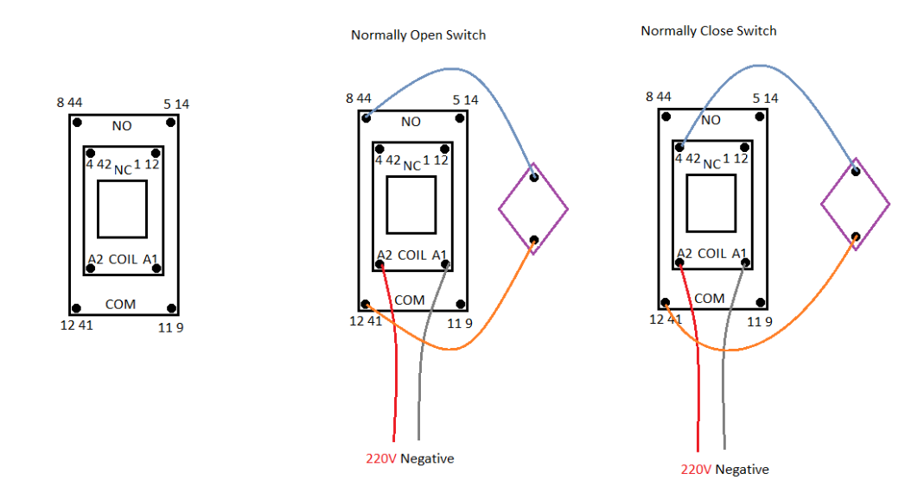
A relay has 2 modes.
Normally Open or
Normally Closed.
Normally open - means that the connection will be open if you don't give power to the relay
and close when you do.
Normally close - means that the connection will be closed if you don't give it power to the
relay and open when you do.
We need the 2 pins on that switch to be open (not connected) until we want to switch it,
then those 2 pins need to close (connect). So we will configure it in a normally open
mode as the diagram shows.
Here is the full wiring diagram:
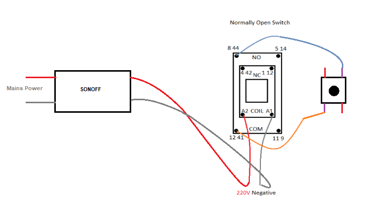
For 2 applications like the garage and the gate you will need 2 Sonoff switches and 2 relays
connecting to the 2 buttons.
Because you want the button to be pressed and released after a second, you need to use
the Inching feature on the Sonoff to do that.
Don't let the picture below scare you. I just allowed a lot of wiring in a small box.
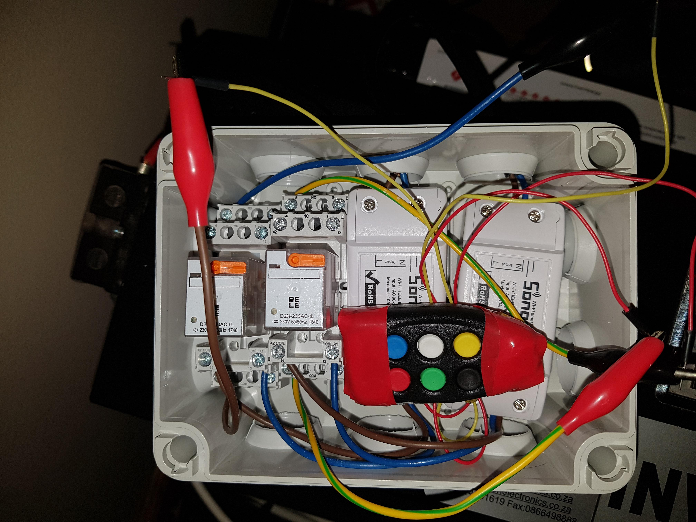
Opening Garage and Gates
With a single remote button using a DIY sonoff board:
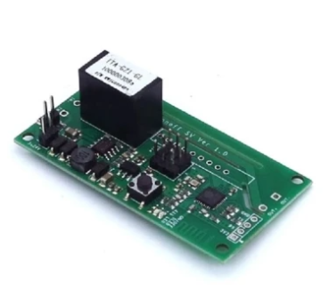
The DIY sonoff board is not packaged like the normal Sonoff switch and you need some soldering to get it working.
The advantage of this is that you don't need any relay's. You will set the board in a Relay
mode and wire it directly to the button as per the above project.